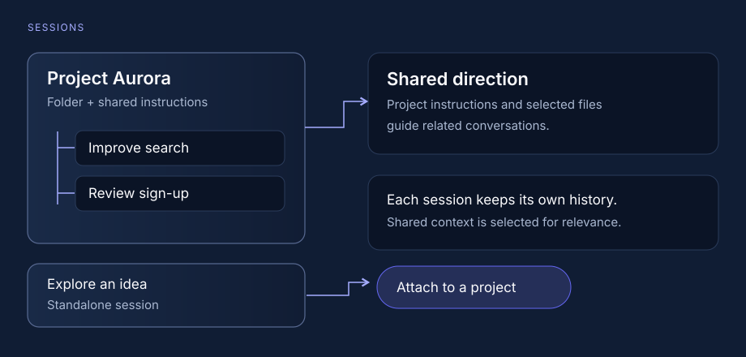
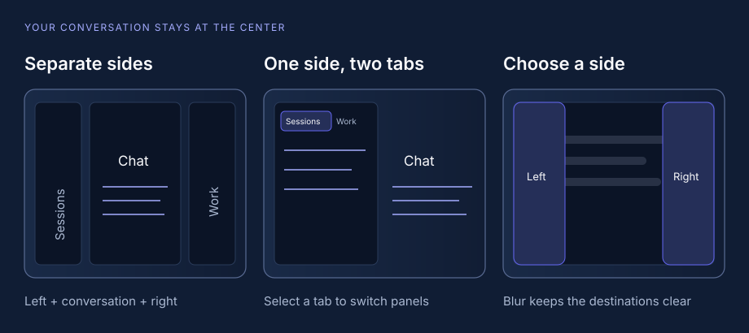
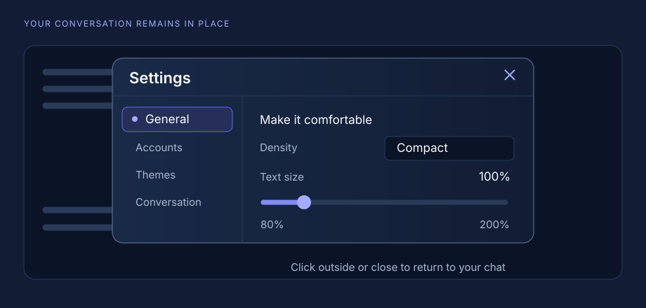
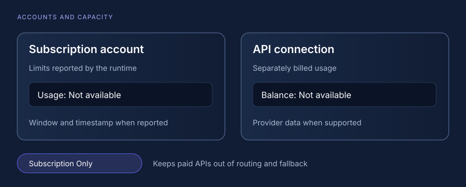
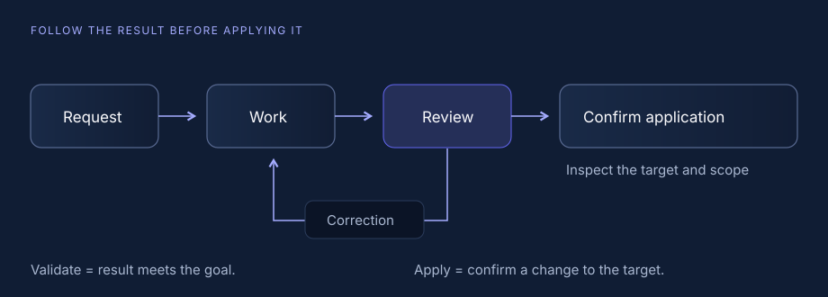

Start with a conversation, bring your agents together, and find the controls you need when you need them.
9 guides to help you get started
No guides match that search. Try “session”, “accounts”, or “review”.
01 / START SMALL
Your first session
You can start with a single account. Multiple accounts, custom modes, and Studio are options you can explore later.
Open Settings → Accounts and choose Subscription or API first, then the provider. Follow the authorization flow offered by that connection.
Choose New session in the Sessions panel. Start independently, or select a project if the work belongs to one.
When your request involves files, select the working folder and review the scope before continuing.
Describe what you want to create or change, including what a good result looks like, then send your message.
A useful first request
“Explain this project's structure, identify the main entry points, and suggest one small improvement. Ask before changing files.”
Questions about an idea can begin without a project. Tasks involving your code need an appropriate working folder and file permissions.
02 / KEEP THE CONTEXT CLEAR
Sessions & projects
A session is a conversation with its own messages and work. A project groups related sessions around a working folder, shared instructions, and selected project context.

Related sessions share a project, while each conversation keeps its own history.
Start inside a project
Expand the project in Sessions.
Use its new-session action.
Write your request in the conversation.
Start independently
Choose New session.
Keep it standalone or choose a working folder.
Attach it to a project later if you need shared context.
Attach an existing session
Use the session's project action to choose an existing project or create one. The conversation stays with the session. Review the new folder and shared context before asking for further file changes.
Find and resume work
Use session search to find a conversation by its title or project. Select a session to resume it; switching sessions preserves the conversation's draft. Open another session when you want a separate line of work.
Project context is selected for relevance and permissions. Grouping sessions does not automatically include every conversation or every file in each request.
03 / A WORKSPACE THAT FITS
Arrange your workspace
Sessions starts on the left and Navigation on the right. Work shows the current session's tasks when needed. Move each panel between the two sides to match the way you work.

A shared dock becomes a set of tabs, leaving the conversation room to breathe.
Drag the panel's title or tab toward an available dock.
The workspace blurs to highlight the left and right destinations. Release over the side you want, or press Escape to cancel.
If panels occupy the same dock, select the desired tab, such as Sessions or Work, to switch between them.
Use the keyboard or a compact screen
Open the panel's position menu to choose a dock without dragging. Use Tab to focus a tab, then activate it with Enter or Space. On smaller screens, panels adapt to the available space; the conversation remains the main workspace.
Use Settings → Panel layout → Reset layout if you want to return to the default arrangement. The Work panel appears when the current session has tasks to show.
04 / YOUR WAY OF WORKING
Settings & personal style
Open the gear button to bring up Settings in the center of the screen. Your conversation stays behind the window; closing it returns you to the same work and draft.

Settings live in a closable window rather than replacing your conversation.
General → Your profile: set your display name. Compact is the default density; use the text-size slider to choose a scale from 80% to 200%.
Accounts: manage connections and inspect the usage information available for each one.
Themes: choose Studio or another theme. Themes apply immediately and their names stay in English.
General → Interface language: select English, Portuguese, or Spanish. English is the default.
Conversation → Personal instructions: describe how you prefer responses to sound, such as concise, formal, or relaxed. Save these preferences for upcoming work.
Write helpful response instructions
For example: “Keep explanations concise, mention important assumptions, and use a friendly tone.” These preferences guide responses; they do not grant file permissions, override provider restrictions, or replace a task's acceptance criteria.
Click outside the window, use its close button, or press Escape while working in Settings to dismiss it. Unsaved profile and instruction drafts stay available when you reopen it. Review account and billing choices before saving them.
05 / KNOW WHAT IS AVAILABLE
Accounts & usage
A connection identifies a provider, account, and runtime. You can use one supported connection or keep several with clear names. Availability and selectable models depend on each adapter's real capabilities.

Subscription capacity and API billing are different measurements.
Open Settings → Accounts to add, rename, inspect, or remove a connection.
Choose Subscription for a supported runtime account or API for a provider key, then select the provider.
Enter the provider's required connection details. Azure also needs an endpoint and deployment; AWS Bedrock needs a region. Never put passwords, tokens, or API keys in a conversation or response instructions.
Inspect status, capabilities, and the timestamp attached to any reported usage.
API choices include OpenAI, Anthropic, Gemini, Azure AI, AWS Bedrock, and compatible endpoints. Gemini API and the Antigravity runtime are separate connections. A discovered model does not automatically include every tool: web search, reasoning controls, and other capabilities must be confirmed for that model and endpoint.
Understand usage indicators
A percentage is shown only when the runtime provides a usable limit and usage value for that account. Providers may expose different windows or separate limits. Not available means that Orchestrix cannot observe the value; it does not mean zero usage or unlimited access.
API credit, balance, or spending appears separately when the provider exposes it. Runtime token counts alone cannot establish your remaining subscription quota or your billed amount.
Choose a billing boundary
Subscription Only keeps paid API connections out of routing and fallback. Enabling an API connection is an explicit choice with its own budget controls. If a permitted connection becomes unavailable, inspect the suggested alternative or wait for capacity; Orchestrix should not silently cross that billing boundary.
Connection controls have real limits
If authorization or an operation is unavailable in the current adapter, the interface tells you rather than pretending the account is connected or an action succeeded.
06 / GIVE THE TASK THE RIGHT RESOURCES
Models & reasoning
Choose a strategy and let Orchestrix work within the models, reasoning levels, and tools actually exposed by your connections. Automatic selection is useful with one account too.
Efficiency
Favor available capacity and use lighter models or less reasoning when they are sufficient for the task.
Balanced
Balance quality, responsiveness, and capacity use.
Performance
Favor stronger models for demanding work, while avoiding unnecessary reasoning for straightforward checks.
Custom
Adjust preferences and rules to suit your own work.
Complexity, risk, importance, and task type guide the choice. A more expensive model or a higher reasoning level is not automatically better. Simple status checks, such as checking the Git working tree, can use a direct tool when available.
Inspect and adjust a decision
Open Studio to inspect the selected connection, model, reasoning, and relevant context. Apply manual preferences or narrower project and task rules when appropriate. An unsupported preference cannot create a capability the runtime does not expose.
If only one model or reasoning setting is available, Orchestrix works within that constraint rather than implying it can select another one.
07 / SAME WORKSPACE, DIFFERENT GOALS
Modes & agent profiles
A mode defines the purpose and expected outcome of the work. An agent profile guides a participating agent's role, such as how a coder implements changes or how a reviewer checks them.
Choose the mode that best matches your goal before sending a request.
State the expected output, relevant materials, and criteria for success.
Adjust profile instructions or create a specialized mode when the available controls support it.
Keep the role's purpose intact when editing a built-in profile. For example, ask a coder to reuse existing components or ask a researcher to distinguish citations from hypotheses.
Mode names describe intent. Producing files, searching external sources, building a presentation, or checking security still requires the necessary tools, access, and validation. Review the available capability before starting.
08 / FOLLOW THE WORK, MAKE THE DECISION
Progress & review
The conversation carries your request and the next step. Studio adds details about context, decisions, and the work's current state.

Validating a result and applying it are separate decisions.
Follow the task's status and any request for clarification or permission.
Open the result to inspect changes, explanations, and available checks.
If something is missing, request a correction with specific criteria. Review the updated result.
Validate the result when its content meets the goal.
Review the application target and confirm application only when you want those changes made there.
Validate means the prepared result meets the criteria. Apply confirms a change to the selected target. Check the destination, scope, and permission request before that second decision.
Runtime workflows vary. Always use the actual status and supported operations shown for the current task; a label alone is not proof that an operation completed.
09 / WHEN SOMETHING NEEDS ATTENTION
Permissions & recovery
An account cannot connect
Check the connection's status and adapter availability in Accounts. Follow its authorization instructions instead of pasting credentials into chat.
Usage is not available
Inspect the provider's own account page when needed. An unreported quota or balance remains unknown.
A task asks for access
Review the requested folder, operation, and scope. Grant only the access appropriate to the request or change the task.
A task stops or reaches a limit
Inspect the last confirmed status and available recovery actions. Resume or retry when supported, or select another permitted connection after reviewing the consequences.
The result is incomplete
Request a correction describing the missing behavior and expected evidence. Revisit the result before application.
The workspace arrangement feels wrong
Move panels using their position controls or reset the layout in Settings. Check that the desired tab is selected when panels share a dock.
Keep the task's error message and the last confirmed action when reporting a problem. Avoid sharing credentials, private account data, or unrelated project files.